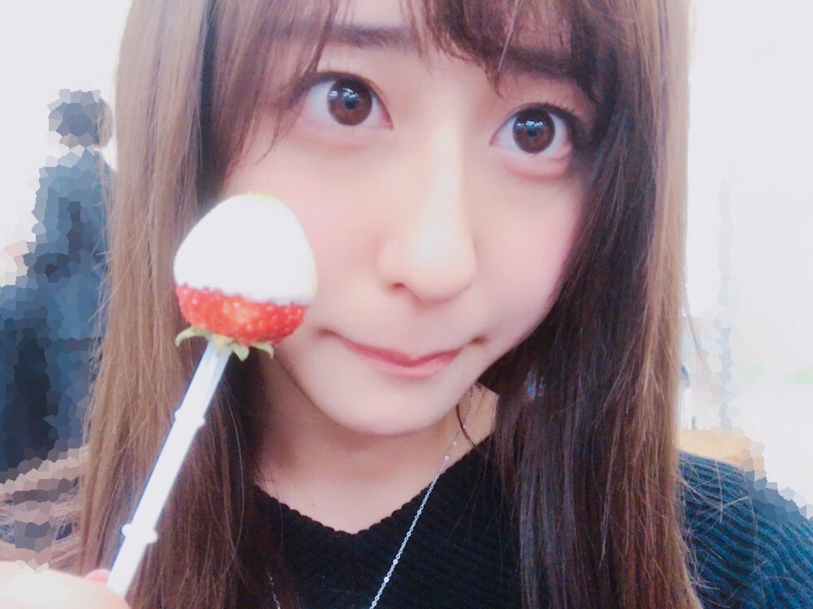
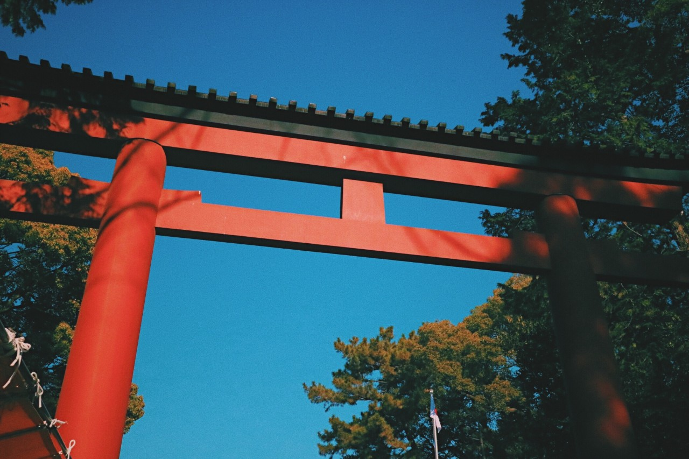
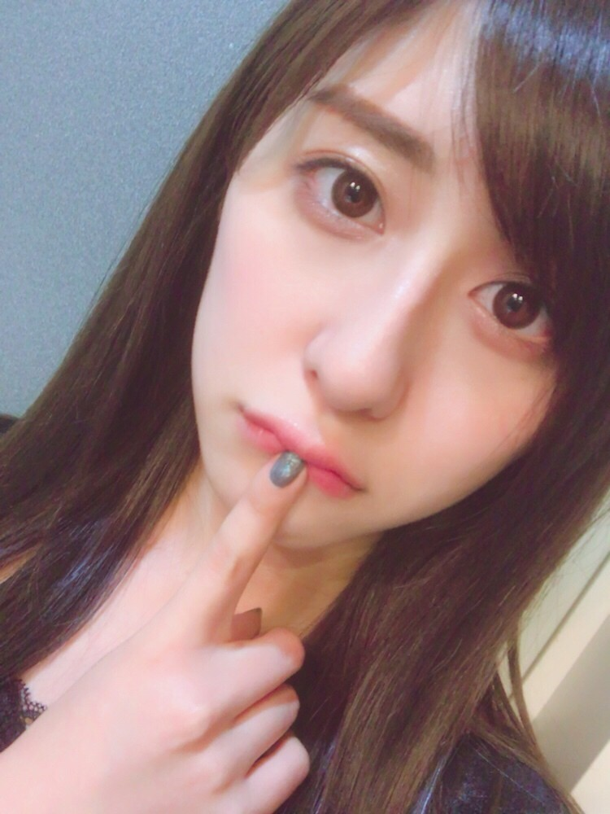

| 2017/01 05 Thu | 斎藤ちはる 吉でした。 |
ちはるーむへようこそ。

今日はいちごの日。
1/5。
いちごってなんでこんなに可愛くて
こんなに真っ赤でこんなに甘くて
こんなに美味しいんだろう。
毎日食べても飽きないと思う〜\( ˆ ˆ )/
フルーツ大好き\( ˆ ˆ )/
--------------------------------♡
先日父母と初詣に行ったので、
おみくじを引いたら
3人とも「吉」でびっくり。
そしてよくよく見たら
私とお母さんは全く同じおみくじでした！
びっくり！！
番号まで全部同じ( ¨̮ )！
こんな事今までなかったから初めて！！
今年もお母さんとは気が合いそうです。笑
皆さんはおみくじ引きましたか〜？
(﹡ˆ ˆ﹡)
今年一発目の
#chihashot

大きな鳥居。
撮った写真にフィルター加工をつけて
少しレトロっぽくしてみました。
鳥居にかかる木の影が素敵！
#chihashot
家族で出かけた時に車窓から撮った
この景色が本当に綺麗で
お気に入りショットです。
ちょうどぴったりのタイミングで
電柱が真ん中の時に撮れて良かった◎
--------------------------------♡
♬ ChihaMusic
「ありがとう」いきものがかりさん
今日、ニュースを見てびっくりしました...！
一旦活動休止。。
放牧宣言。。
小・中学校で歌ったり、
乃木坂合格後のボイトレで歌ったり、
カラオケで毎回歌ったり、
色々な曲が色々な場面で
私の思い出に残っています。
なので少し寂しいです。、
"ありがとう"の意味を込めてこの曲を。
"あなたの夢がいつからか
2人の夢に変わっていた
今日だっていつか 大切な思い出
青空も泣き空も 晴れ渡るように"
本当に素敵な歌詞。
これからもずっと大好きな曲。
去年の今頃の写真をまた見ていましたが
今と顔の雰囲気が違う...！
なんかギラギラしている( ˟_˟ )
ギラギラ( ˟_˟ )
髪色や前髪やメイクでこんなにも違うとは。

ぶにゅ。
今の方がナチュラルかな？
時が経つとメイクの好みも変わります。
いざ、大人計画...！
おやすみ〜
斎藤ちはる